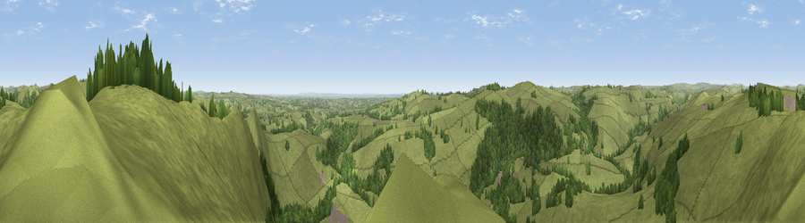

Viewpoint near Ilam
#10667 in England · top 8% of its area beats it · near IlamWhere it is
The exact computed spot (SK 13975 51525). Click the marker for map links.
The view, rendered

A 360° render of this exact spot computed from the terrain model, tree cover and land cover — summer colours, afternoon light, calibrated against photographs of famous viewpoints. Real trees, hedges and buildings will differ in detail.
The panorama
Grey silhouette: terrain skyline in each direction (720 bearings, Earth curvature and refraction included). Dashed green: skyline with trees (+15 m) and buildings (+8 m) as obstacles. Blue strip: how far the ground is visible on each bearing.
Where the view opens
Wedge length = distance to the farthest visible ground on that bearing (vegetation-aware). Rings at 10, 25 and 50 km.
What fills the view
86% grassland · 13% woodland
Angular shares of the visible panorama (visual magnitude), not map area. Landscape diversity 0.19 (0–1 Shannon).
Key numbers
More beautiful places nearby
The staircase of upgrades: each row has a higher view potential than everything closer. Driving times are estimates from straight-line distance, calibrated against real road routing — check an actual route before setting out.
| Place | Direction | Drive | Score |
|---|---|---|---|
| Viewpoint near Ilam | ENE · 0 km | ~1 min | 66.3 |
| Tissington Hill | NE · 2 km | ~4 min | 75.5 |
| Viewpoint near Mow Cop | WNW · 29 km | ~45 min | 78.9 |
| Viewpoint near Mow Cop | WNW · 29 km | ~45 min | 80.2 |
| Viewpoint near Harthill | W · 63 km | ~85 min | 80.5 |
| Viewpoint near Little Wenlock | SW · 66 km | ~89 min | 84.2 |
| The Wrekin | SW · 67 km | ~90 min | 85.0 |
| Viewpoint near Little Wenlock | SW · 67 km | ~90 min | 86.6 |
53.06079, -1.79293 · source: screening · position refined by local search. Computed location — check access rights before visiting.